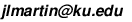

Math 824 (Algebraic Combinatorics)
Spring 2015
General Information |
Lecture Notes |
Problem Sets |
Textbooks |
Final Project |
Links
General Information
- Instructor:
Jeremy Martin
- E-mail:  (the best way to contact me)
- Office: 623 Snow Hall, (785) 864-7114
- Office hours: Tue/Wed 2-3 PM, or by appointment
- Lectures:
MWF, 11:00-11:50 AM, 564 Snow
- Prerequisite: Math 724 (Enumerative Combinatorics) or permission of the instructor.
- KU course number: 66459
- Syllabus (1/16/15)
Lecture Notes
Lecture notes (one big PDF file; last
update 4/29/15) [Newer version available from my homepage]
These notes are licensed under a Creative Commons Attribution-NonCommercial-ShareAlike 3.0 Unported License. In
short, use them freely but do not sell them or anything derived from
them. If you are a KU graduate student (or for that matter, if you aren't),
do not print out the full set of notes on the department's printer!
Material covered each day:
- Wed 1/21: Introduction; posets; Young's lattice
- Fri 1/23: Partition lattice; some examples of simplicial complexes
- Mon 1/26: Simplicial complexes, shellability
- Wed 1/28: Simplicial homology (brief overview); polytopes
- Fri 1/30: Lattices
- Mon 2/2: Distributive lattices
- Wed 2/4: Modular lattices
- Fri 2/6: Semimodular and geometric lattices
- Mon 2/9: Matroid closure operators
- Wed 2/11: Matroid independence systems
- Fri 2/13: Graphic and uniform matroids
- Mon 2/16: Circuit systems and greedy algorithms; representability and regularity
- Wed 2/18: Matroid operations (direct sum, duality, deletion/contraction)
- Fri 2/20: The Tutte polynomial
- Mon 2/23: The chromatic polynomial
- Wed 2/25: Acyclic orientations
- Fri 2/28: The incidence algebra of a poset
- Mon 3/2: Ehrhart theory (Prof. Marge Bayer)
- Wed 3/4: Ehrhart theory (Prof. Marge Bayer)
- Fri 3/6: Möbius inversion
- Mon 3/9: The characteristic polynomial
- Wed 3/11: Möbius functions of lattices
- Fri 3/13: Recipes for Tutte evaluations; the crosscut theorem
- Mon 3/23: Hyperplane arrangements: basics
- Wed 3/25: Zaslavsky's theorems I
- Fri 3/27: Zaslavsky's theorems II
- Mon 3/30: The finite field method and the Shi arrangement
- Wed 4/1: Supersolvable arrangements; complex arrangements
- Fri 4/3: A whirlwind tour of oriented matroids (and the max-flow/min-cut theorem)
- Mon 4/6: Representation theory basics
- Wed 4/8: Homomorphisms, irreducibility, Maschke's Theorem
- Fri 4/10: Characters
- Mon 4/13: The fundamental theorem of representation theory of finite groups
- Wed 4/15: Working out character tables; characters of abelian group and Pontrjagin duality
- Fri 4/17: Representations of the symmetric group via Young tabloids
- Mon 4/20: Symmetric function basics
- Wed 4/22: Schur functions
- Fri 4/24: The Cauchy kernel and the Hall inner product
- Mon 4/27: The RSK correspondence
- Wed 4/29: Restricted and induced representations; Frobenius reciprocity
- Fri 5/1: The Frobenius characteristic
- Mon 5/4: Hopf algebras; course evaluations
- Wed 5/6: Hopf algebras
Problem Sets
All solutions must be typeset using LaTeX.
- Here is a header file with useful macros (last update
4/29/15).
- Here is a sample source
file that uses the header (and will produce the first couple of pages of the lecture notes).
- Packages that are useful for figures include TikZ, Ipe, and xfig.
E-mail me the
PDF file under the name {your-last-name}{number-of-problem-set}.pdf (e.g.,
"Rota5.pdf").
- Problem Set #1 (due Fri 2/6): 1.1, 1.2, 1.4, 1.7, 1.10 (optional but highly recommended), 1.11, 1.14, 2.1
- Problem Set #2 (due Mon 2/23): 2.5, 2.7, 2.9, 3.3, 3.4, 3.5, and at least one of 3.6 or 3.10
- Problem Set #3 (due Fri 3/13): 4.1, 4.5, 5.2, 5.4, 5.5
- Problem Set #4 (due Fri 4/3): 6.1, 6.2, 6.3
- Problem Set #5 (due Fri 4/24): 8.1, 8.3, 8.4, 8.5
- Problem Set #6 (due Thu 5/7, 11:59pm): 9.1, 9.2, 9.3, 9.4
Textbooks
We will follow the lecture notes rather than any one specific
textbook and all of the homework assignments will be self-contained.
However, the following books may be helpful (and you should definitely
obtain the free downloads). All these books can be perused in
Jeremy's office.
- R.P. Stanley, Enumerative Combinatorics, volume 1, 2nd ed. (Cambridge, 1997)
(Enumeration; posets and lattices; generating functions)
Buy it from the publisher
Download the free preprint version from Stanley's website
- R.P. Stanley, Enumerative Combinatorics, volume 2 (Cambridge, 1999)
(More enumeration, including exponential generating functions; symmetric functions)
Buy it from the publisher
- M. Aigner, A Course in Enumeration (Springer, 2007)
(Enumeration; posets, lattices, and matroids)
- M. Aigner, Combinatorial Theory (Springer, 1997)
(Enumerative combinatorics, symmetric functions, and matroids)
- R.P. Stanley, Hyperplane Arrangements
(lecture notes available free online)
- A. Schrijver, A Course in Combinatorial
Optimization (lecture notes available free online)
- T. Brylawski and J. Oxley, The Tutte polynomial and its
applications, Chapter 6 of Matroid applications, N. White, ed.
(Cambridge Univ. Press, 1992)
- M. Beck and R. Sanyal, Combinatorial Reciprocity
Theorems: A Snapshot of Enumerative Combinatorics from a Geometric
Viewpoint (manuscript available free online)
- B.
Sagan, The Symmetric Group, 2nd edn. (Springer, 2001)
Final Project
The final project is to read a current research article in
combinatorics, write a short, self-contained summary (1 page),
give a short talk on it (20 minutes, like
an AMS special session talk) to an audience of fellow
graduate students,
and provide constructive criticism on another
student's project. Complete details are here.
Everyone should meet with Jeremy individually to select a paper
to read, no later than April 10.
| Time |
Speaker |
Paper |
Reviewer |
| 10:30 |
Ken Duna |
A. Brouwer, S. Cioaba, W. Haemers and J. Vermette
Notes on simplicial rook graphs
arXiv:1408.5615.
| Lucas Chaffee |
| 10:55 |
Brent Holmes |
F. Santos, T. Stephen and H. Thomas
Embedding a pair of graphs in a surface, and the width of 4-dimensional prismatoids
Discrete Comput. Geom. 47 (2012), no. 3, 569-576.
| Josh Fenton |
| 11:20 |
Josh Fenton |
F. Ardila
Computing the Tutte polynomial of a hyperplane arrangement
Pacific J. Math. 230, no. 2 (2007), 1-26. |
Kevin Adams |
| 11:45 |
Lucas Chaffee |
C. Greene, H. Nijenhuis and H. Wilf
A probabilistic proof of a formula for the number of Young tableaux of a given shape
Adv. Math. 31 (1979), 104-109. |
Brent Holmes |
| 1:00 |
Bennet Goeckner |
C. Klivans
Obstructions to shiftedness
Discrete Comput. Geom. 33 (2005), 535-545. |
Ken Duna |
| 1:25 |
Kevin Adams |
B. Braun and R. Ehrenborg
The complex of non-crossing diagonals of a polygon
J. Combin. Theory Ser. A 117 (2010), 642-649. |
Bennet Goeckner |
Links
KU links
Software and online resources
- LaTeX:
- Sage (free, open-source mathematical software), including:
Last updated Sat 5/16/15